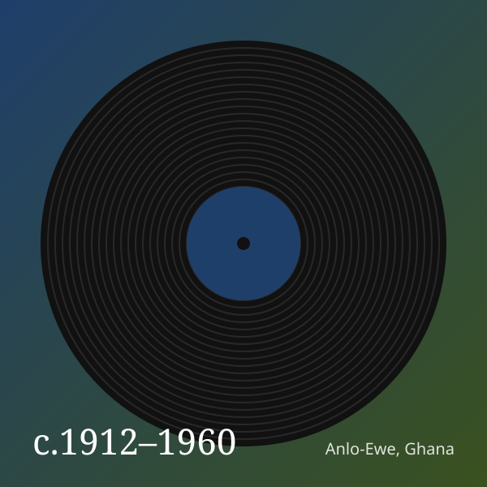

Haló: when towns went to war with songs

Among the Anlo-Ewe of southeastern Ghana, haló was a war of insult songs between towns and factions: drums, dance, mime, costume and verses composed to wound. Fieldwork found it in about 88% of Anlo-Ewe towns. A local saying holds that being insulted in song is worse than a beating, because the song outlives you.
It was so powerful that Ghana banned it in its 1960 Criminal Code. We haven't yet found a recording, and the songs still name families. If you know of one, write to us.